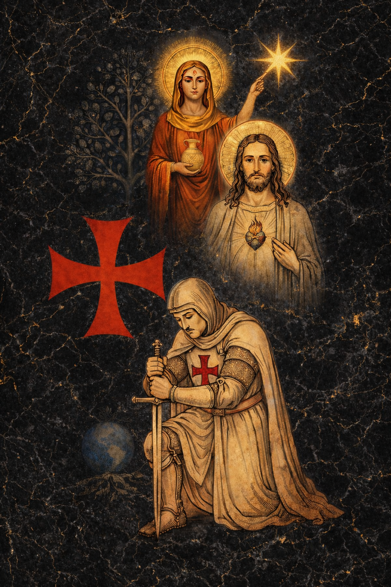

I. Histoire passée
1. Fondation de l’Ordre d’origine
Il y a plus de dix ans, à Bâle, en Suisse, est fondé un ordre chevaleresque sous le nom de :
Souverain et Auguste Ordre Chevaleresque de Notre-Dame de Sion
Cet Ordre est créé par un évêque, en présence de deux autres évêques témoins, issus de courants du christianisme primitif indépendant, en dehors des structures romaines classiques.
La fondation repose sur plusieurs revendications de continuité formulées par le fondateur dans ses déclarations et documents statutaires.
Il affirme d’une part l’existence d’une lignée apostolique qu’il fait remonter aux apôtres, indépendamment de toute filiation templière.
Il rattache d’autre part l’Ordre à une tradition néo-templière issue du courant développé au XIXᵉ siècle par Bernard-Raymond Fabré-Palaprat.
Enfin, il évoque également une continuité monarchique symbolique qu’il relie, par adoption revendiquée, à la lignée de Guy de Lusignan.
Ces différentes filiations constituent le cadre narratif et doctrinal initial présenté par le fondateur.
L’Ordre est alors conçu comme :
- un ordre chevaleresque structuré ;
- porteur d’une dimension initiatique chrétienne ;
- organisé autour de Notre-Dame de Sion, dans une compréhension spirituelle assumée.
2. Décès du Grand Maître fondateur
Le Grand Maître fondateur décède prématurément à Cuba.
Ce décès entraîne une mise en sommeil de facto de l’Ordre, sans dissolution formelle, mais avec un arrêt de son activité structurée.
3. Reprise de l’Ordre en 2022
En 2022, d’anciens membres réunis en Chapitre en Italie ont procédé à la réactivation de l’Ordre. Au cours de ce Chapitre, un nouveau Grand Maître a été élu.
À la suite de cette élection, et après prise de contact avec l’un des évêques témoins ayant participé à la fondation, celui-ci a accepté de procéder à la transmission au nouveau Grand Maître de la continuité revendiquée des trois filiations présentées par l’institution. Pour plus d’informations, voir notre page encyclopédique.
Dans le cadre de cette reprise, cet ancrage se traduit notamment par :
- d’un ancrage marial plus affirmé ;
- d’un rapprochement avec une spiritualité catholique ;
- du maintien d’une structure d’ordre, fidèle à son identité initiale.
4. Arrivée de futurs responsables (2022)
Au cours de l’année 2022, plusieurs personnes — dont certains qui occuperont par la suite des responsabilités importantes dans notre structure actuelle — rejoignent en Suisse le Souverain et Auguste Ordre Chevaleresque de Notre-Dame de Sion.
Cet engagement se fait dans un état d’esprit clair :
- recherche d’un cadre chevaleresque structuré ;
- volonté d’un chemin templier, entendu dans ses dimensions morale, fraternelle, culturelle et initiatique ;
- adhésion, à cette époque, au fait que l’Ordre se présente comme un ordre structuré autour de Notre-Dame de Sion, avec une dimension mariale assumée.
Pour plusieurs d’entre nous, il s’agissait d’une démarche sérieuse, vécue comme une expérience humaine, fraternelle et structurante.
5. Développement en France et création d’une structure juridique (novembre 2024)
En novembre 2024, dans le cadre du développement de l’Ordre vers la France, les membres français décident de créer une structure juridique associative afin de disposer d’un cadre légal sur le territoire français.
Est alors créée l’association :
Prieuré de l’Ordre Chevaleresque Templiers des Terres de Savoie (OCNDS)
Cette structure est pensée comme :
- une entité associative distincte ;
- organisée sous forme chevaleresque ;
- rattachée et affiliée, à cette date, à l’Ordre d’origine (maison-mère située en Italie) et au prieuré suisse.
6. Pourquoi le nom « Terres de Savoie »
Le choix de cette dénomination répond à une intention prudente :
- éviter tout amalgame avec les constructions médiatiques liées au terme « Sion » ;
- prévenir les confusions avec le prétendu « Prieuré de Sion » popularisé au XXᵉ siècle ;
- adopter un ancrage territorial clair et neutre.
7. Assumer l’appartenance réelle
Au fil des mois, une réflexion collective s’engage parmi les membres français.
Plusieurs constats émergent :
- le nom initial ne reflète pas pleinement la réalité du rattachement ;
- l’évitement du terme « Sion » crée une ambiguïté ;
- il apparaît plus cohérent d’assumer publiquement l’origine réelle.
La structure française adopte alors la dénomination :
Ordre Templier de Notre-Dame de Sion (France)
Cette évolution vise la transparence, sans intention de rupture. (plus d’infos : cliquer ici)
8. Clarification juridique et philosophique
Une évidence s’impose progressivement :
Une association loi 1901, laïque, ne peut revendiquer ni succession apostolique ni nature religieuse.
Cela conduit à :
- renoncer à toute revendication de filiation religieuse ;
- distinguer clairement association culturelle et structure religieuse ;
- clarifier la vocation réelle du projet porté en France.
Dans le même esprit de rigueur et d’apaisement, la réflexion engagée a également conduit à ne plus fonder l’identité de la structure française sur des continuités symboliques, honorifiques ou institutionnelles simplement affirmées, dès lors qu’elles ne relevaient pas d’un cadre associatif clair, vérifiable et propre à la vocation réellement assumée par l’association.
9. Décision d’indépendance (octobre 2025)
Début octobre 2025, l’ensemble du groupe français, rejoint par quelques membres suisses, prend une décision collective :
- affirmation d’une indépendance complète ;
- absence de revendication apostolique ou religieuse ;
- affirmation d’un cadre exclusivement associatif, laïque, autonome et distinct.
Cette décision se fait sans rupture humaine, dans un climat apaisé.
Des relations amicales et respectueuses subsistent entre membres.
Les membres ayant choisi de poursuivre leur engagement au sein de l’O.S.D.9.T.D.J. le font désormais exclusivement dans ce cadre, chaque structure poursuivant son activité de manière autonome, indépendante et distincte.
10. Changement de nom et officialisation
L’association adopte alors le nom :
Ordre Sacré des Neuf Templiers de Jérusalem (O.S.D.9.T.D.J.)
Ce changement est :
- déclaré officiellement ;
- publié au JOAFE ;
- accompagné de statuts affirmant clairement la nature laïque et associative de la structure.
II. Histoire présente et future : continuité, ouverture et discernement

L’Ordre Sacré des Neuf Templiers de Jérusalem est une association laïque, culturelle et indépendante, régie par la loi de 1901.
Il n’a ni vocation religieuse, ni prétention à une succession apostolique.
Il reconnaît toutefois que l’histoire templière fut profondément marquée par une dimension spirituelle, exprimée notamment à travers la fidélité à Notre-Dame, comprise historiquement comme principe de sagesse, de droiture et de protection, tel qu’il était perçu par les Templiers médiévaux.
Dans cette perspective, l’Ordre reconnaît l’existence de structures religieuses distinctes, relevant d’un autre cadre juridique, qui portent un héritage spirituel templier dans leur propre tradition.
Cette ouverture s’inscrit sans confusion : l’O.S.D.9.T.D.J. demeure indépendant et strictement associatif.
À ce titre, Hélios est mentionnée comme Église de christianisme primitif, de fondation anté-chalcédonienne, et conservatrice de l’Église apostolique templière dans sa véritable filiation, depuis le pape Benoît XIII, Pedro de Luna.
Cette mention :
- n’implique aucune filiation institutionnelle ;
- n’engage aucune subordination ;
- s’inscrit dans une démarche de respect, de clarté historique et de non-confusion.
L’Ordre Sacré des Neuf Templiers de Jérusalem demeure un espace ouvert, où chaque membre reste libre de son chemin personnel, dans le respect du cadre associatif, de l’indépendance de l’Ordre et de la fraternité.